| Page | Taken | Storey · grid | Struct. complete | Struct. in progress | Struct. not started | Archit. complete | Archit. in progress | Archit. not started | |
|---|---|---|---|---|---|---|---|---|---|
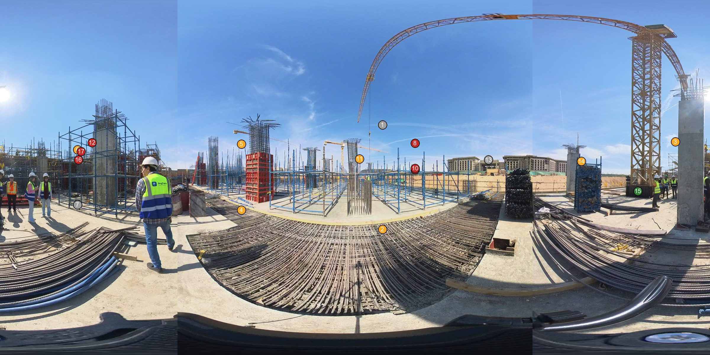 | clip 010 t=0s | 2026-10-31 12:17:13 | HAC-SSL-FL2 · 18/D | 1 | 7 | 0 | 0 | 0 | 6 |
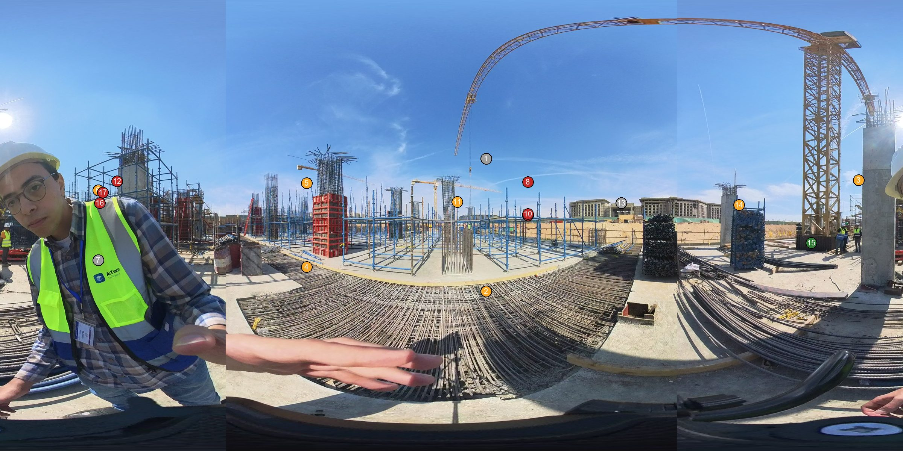 | clip 010 t=20s | 2026-10-31 12:17:33 | HAC-SSL-FL2 · 18/D | 1 | 7 | 0 | 0 | 0 | 6 |
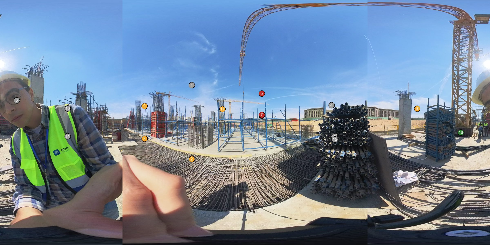 | clip 010 t=30s | 2026-10-31 12:17:43 | HAC-SSL-FL2 · 18/AFX.A-G | 1 | 5 | 0 | 0 | 0 | 3 |
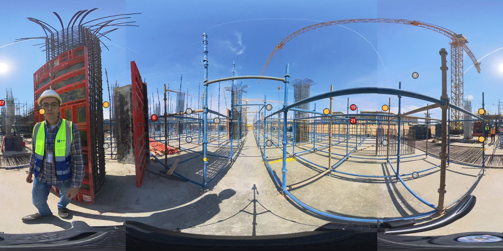 | clip 011 t=0s | 2026-10-31 12:18:29 | HAC-SSL-FL2 · 17/AFX.A-I | 0 | 6 | 0 | 0 | 0 | 6 |
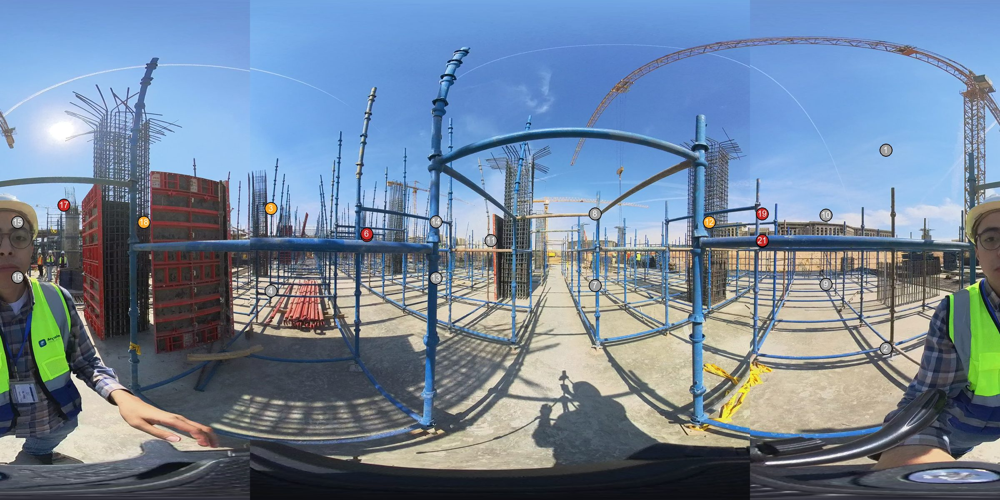 | clip 011 t=14s | 2026-10-31 12:18:43 | HAC-SSL-FL2 · 17/AFX.A-I | 0 | 3 | 0 | 0 | 0 | 6 |
 | clip 012 t=0s | 2026-10-31 12:20:11 | HAC-SSL-FL2 · C/AFX.A-15 | 0 | 4 | 11 | 0 | 0 | 27 |
 | clip 012 t=4s | 2026-10-31 12:20:15 | HAC-SSL-FL2 · C/AFX.A-15 | 0 | 4 | 11 | 0 | 0 | 27 |
 | clip 018 t=0s | 2026-10-31 12:24:45 | HAC-SSL-FL2 · 17/C | 0 | 5 | 10 | 0 | 0 | 17 |
 | clip 018 t=36s | 2026-10-31 12:25:21 | HAC-SSL-FL2 · AFX.A-16/C | 0 | 2 | 0 | 0 | 0 | 3 |
 | clip 018 t=60s | 2026-10-31 12:25:45 | HAC-SSL-FL2 · AFX.A-G/18 | 0 | 4 | 0 | 0 | 0 | 4 |
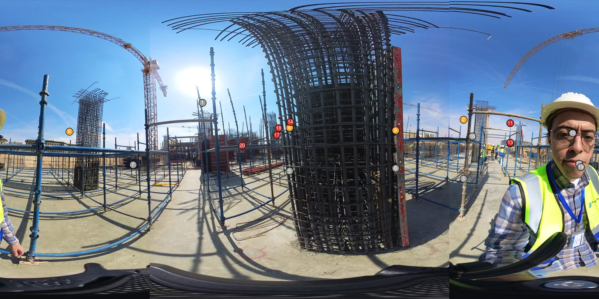 | clip 019 t=0s | 2026-10-31 12:25:54 | HAC-SSL-FL2 · AFX.A-G/18 | 0 | 4 | 1 | 0 | 0 | 6 |
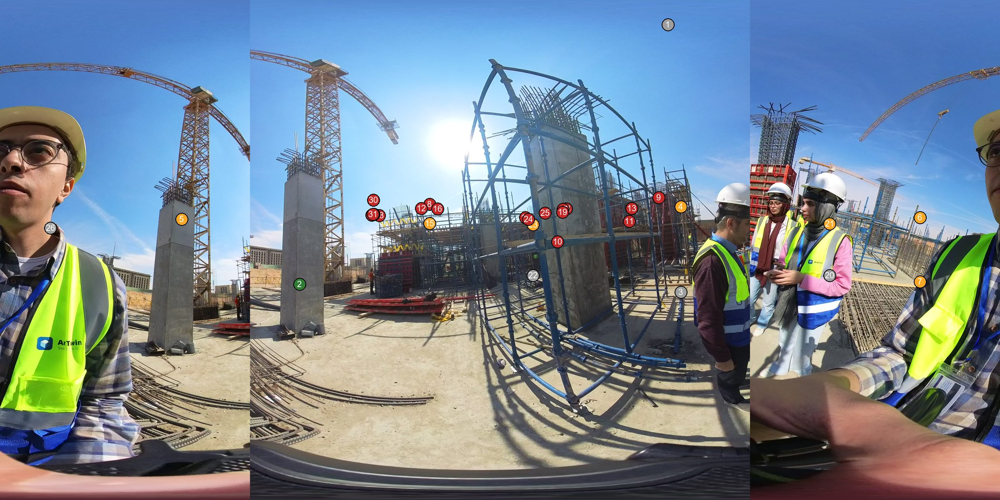 | clip 019 t=38s | 2026-10-31 12:26:32 | HAC-SSL-FL2 · AFX.A-17/AFX.A-G | 1 | 7 | 1 | 0 | 0 | 17 |
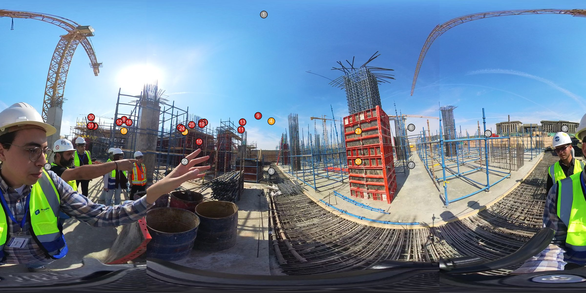 | clip 020 t=0s | 2026-10-31 12:26:51 | HAC-SSL-FL2 · AFX.A-17/AFX.A-G | 0 | 5 | 1 | 0 | 0 | 17 |
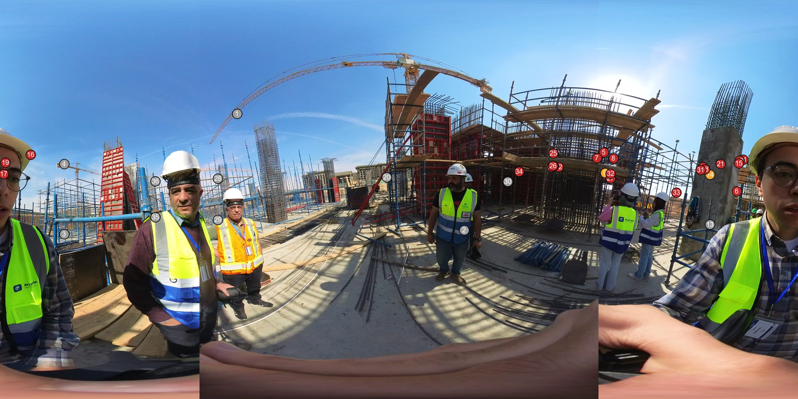 | clip 020 t=66s | 2026-10-31 12:27:57 | HAC-SSL-FL2 · 19/AFX.A-G | 0 | 2 | 1 | 0 | 0 | 22 |
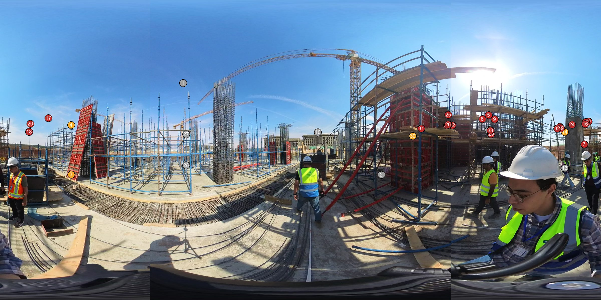 | clip 021 t=0s | 2026-10-31 12:28:27 | HAC-SSL-FL2 · AFX.A-G/19 | 0 | 4 | 1 | 0 | 0 | 21 |
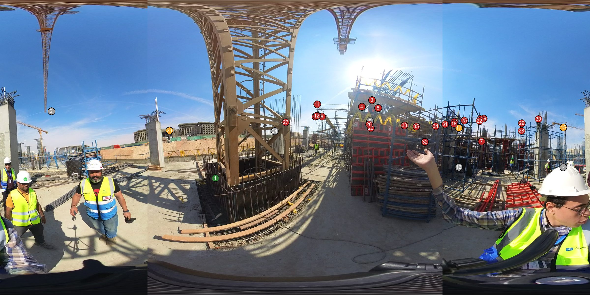 | clip 021 t=28s | 2026-10-31 12:28:55 | HAC-SSL-FL2 · AFX.A-G/19 | 1 | 3 | 1 | 0 | 0 | 25 |
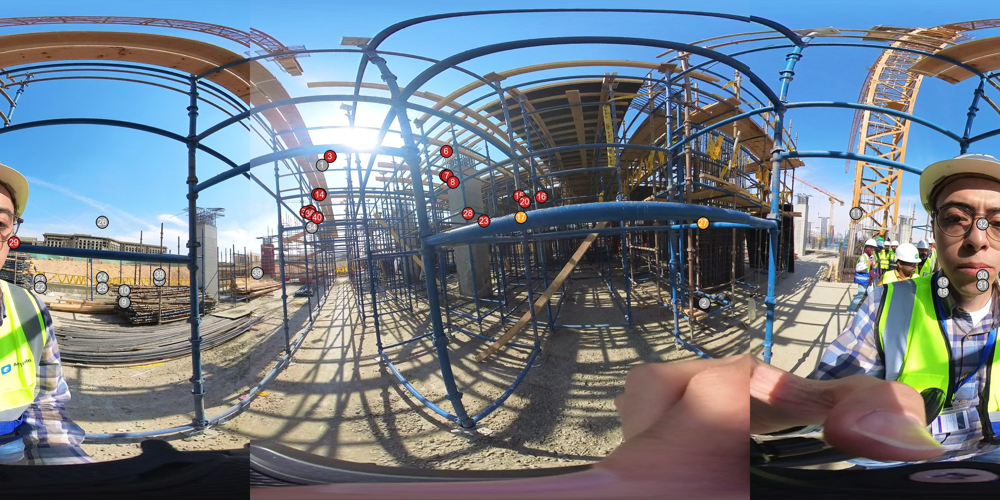 | clip 021 t=58s | 2026-10-31 12:29:25 | HAC-SSL-FL2 · S/AFX.A-18 | 0 | 2 | 1 | 0 | 0 | 18 |
 | clip 022 t=0s | 2026-10-31 12:29:34 | HAC-SSL-FL2 · C/AFX.A-18 | 1 | 1 | 1 | 0 | 0 | 18 |
 | clip 022 t=30s | 2026-10-31 12:30:04 | HAC-SSL-FL2 · 20/B | 0 | 0 | 1 | 0 | 0 | 13 |
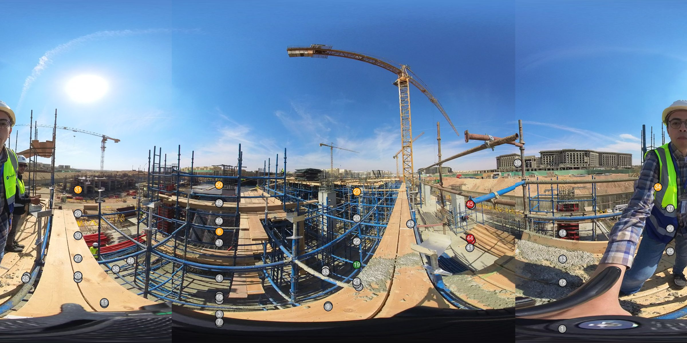 | clip 023 t=0s | 2026-10-31 12:31:46 | HAC-SSL-GF · 20/B | 1 | 5 | 0 | 0 | 0 | 3 |
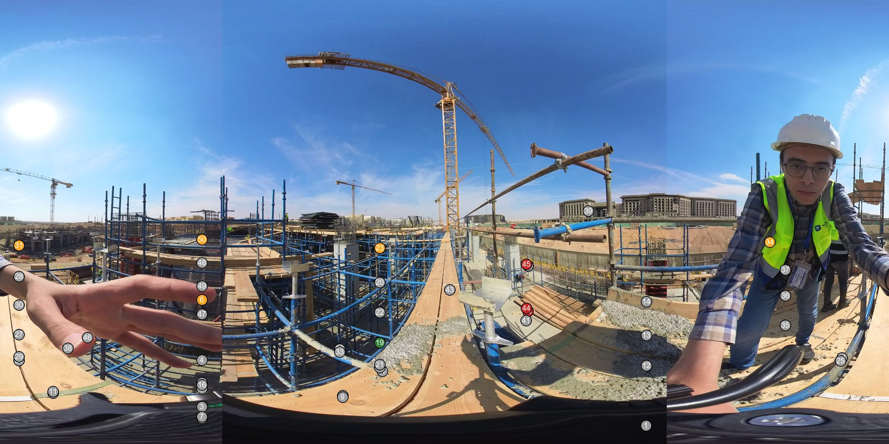 | clip 023 t=4s | 2026-10-31 12:31:50 | HAC-SSL-GF · 20/B | 1 | 5 | 0 | 0 | 0 | 3 |